编者按
Prow 是 Google 发起的适应云原生开源项目的 ChatOps 系统。Kubernetes、Istio 等项目都使用 Prow 实现开源协同。
- K8s 的 Prow 系统：https://prow.k8s.io/
- Prow 开源仓库：https://github.com/kubernetes/test-infra/
- Prow 官方文档：https://github.com/kubernetes/test-infra/blob/master/prow/README.md
我们将以我的 Github 测试仓库 zhangsean/prow-test 为例，来演示在一个本地k8s集群上使用 Prow 来实现CI/CD的诸多效果。
准备一个k8s集群
Prow 运行在 k8s 集群中，最好运行在有公网IP地址的k8s集群，可以免去 Webhook 转发的麻烦。临时测试可以使用本地集群。我使用 kind 创建一个本地 k8s 集群，使用 minikube 等其他工具都可以。
# 创建一个本地集群
kind create cluster
export KUBECONFIG=$(kind get kubeconfig-path)
# 确认k8s启动成功
kubectl version
kubectl get po -A
# 部署 Ingress 控制器会使访问更方便，如果你的 k8s 集群已经有 Ingress 或者想用 NodePort 则可以跳过
# 以下 Traefik Ingress Controller 中启用了默认 https 协议，替换111.22.3.4成你的主机IP即可访问 http://traefik.主机IP.nip.io 查看 Traefik 控制界面
curl -sSL https://github.com/zhangsean/prow-quickstart/blob/master/traefik-ds.yaml?raw= | sed 's|192.168.64.10|111.22.3.4|g' | kubectl apply -f -
准备一个 Github 机器人账号
说明：体验 Prow 效果并不需要额外注册一个 Github 机器人账号，用个人账号完全不影响 Prow 的效果，给 Prow 配置机器人账号只是可以在 PR 中清楚区分哪些是人为和机器人的操作。
如果你还没有机器人账号，请在 Github 注册一个机器人账号，我注册了 zhangsean-bot。
在你的项目仓库中把机器人账号加入合作者中，复制邀请链接，用机器人账号登录 Github 打开邀请链接并接受邀请，这样机器人就有权限读取和操作你的仓库了。
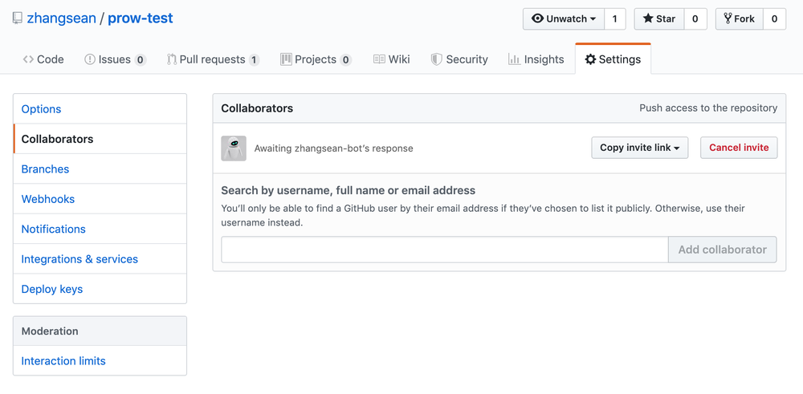
准备 Github 认证令牌
为了授权 Prow 访问 Github 项目动态，用机器人或个人账号登录 Github 并在 Github Tokens 中添加一个含有 repo:status 和 public_repo 权限的令牌。
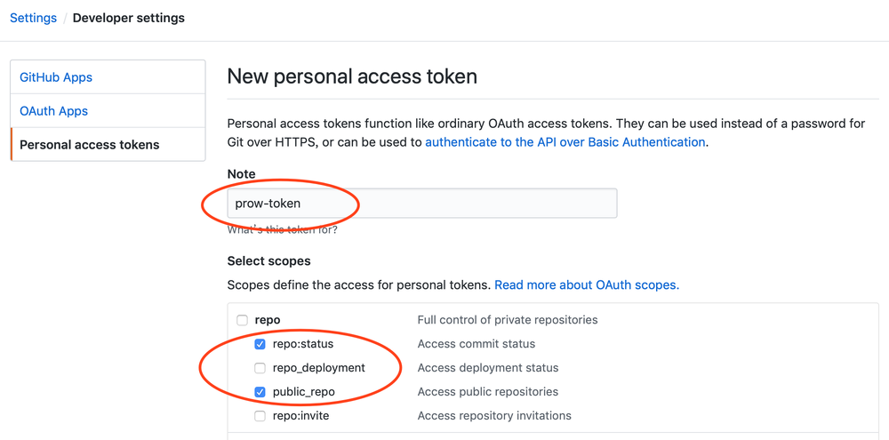
添加成功后把生成的令牌字符串写入到 oauth-token 文件并保存到 k8s 中。
echo "f192f1277d47aff3eb60e99530b1cdc6639fda3c" > oauth-token
kubectl create secret generic oauth-token --from-file=oauth=./oauth-token
再生成一个用于 Github Webhook 认证的 hmac 令牌，并保存到 k8s 中：
openssl rand -hex 20 > hmac-token
kubectl create secret generic hmac-token --from-file=hmac=./hmac-token
部署 Prow
# 部署 Prow starter 集群，默认部署到 default 命名空间
kubectl apply -f https://github.com/kubernetes/test-infra/blob/master/prow/cluster/starter.yaml?raw=
# 等待所有 pods 状态都变成 Running
kubectl get po
# 查看 Prow 默认部署的 ingress
kubectl get ing
# 查看 deck 和 hook 服务的 NodePort 端口
kubectl get svc
服务列表如下所示，deck的 NodePort 端口是31920，hook的 NodePort 端口是30868。
NAME TYPE CLUSTER-IP EXTERNAL-IP PORT(S) AGE
deck NodePort 10.0.13.133 <none> 80:31920/TCP 85s
hook NodePort 10.0.2.190 <none> 8888:30868/TCP 85s
kubernetes ClusterIP 10.0.0.1 <none> 443/TCP 28m
tide NodePort 10.0.86.177 <none> 80:31254/TCP 85s
注意：由于 Prow 配置 PR Status 时必须使用 https 访问，所以如果考虑启用 PR Status 功能，请为 deck 配置 https 访问地址（不要求SSL可信证书）。
如果你的 k8s 集群有公网接入，可以配置 SLB 将流量转发到 deck 和 hook 服务，应该得到两个类似这样的网址：
deck: http://prow.example.com/
hook: http://hook.example.com/
如果直接通过有公网IP的节点IP:NodePort 访问，那么访问网址应该类似这样：
deck: http://111.2.3.4:31920/
hook: http://111.2.3.4:30868/
如果你的 k8s 集群已经有 Ingress 控制器，可以修改 Prow 默认的 Ingress 来配置访问地址：
$ kubectl get ingress
NAME HOSTS ADDRESS PORTS AGE
ing * 80 21h
$ kubectl describe ingress ing
Name: ing
Namespace: default
Address:
Default backend: default-http-backend:80 (<none>)
Rules:
Host Path Backends
---- ---- --------
*
/* deck:80 (10.244.0.32:8080,10.244.0.33:8080)
/hook hook:8888 (10.244.0.16:8888)
# 必须把 deck 针对GKE配置的路径 /* 改成 / 才能适配普通 Ingress 控制器
$ kubectl get ingress ing -o yaml | sed 's|path: /\*|path: /|g' | kubectl apply -f -
# 验证 ingress 中 deck 服务路径是否调整为 /
$ kubectl describe ingress ing
Name: ing
Namespace: default
Address:
Default backend: default-http-backend:80 (<none>)
Rules:
Host Path Backends
---- ---- --------
*
/ deck:80 (10.244.0.32:8080,10.244.0.33:8080)
/hook hook:8888 (10.244.0.16:8888)
# 如果 ingress 需要绑定域名，比如 prow.example.com，以下是Mac的命令
$ kubectl get ingress ing -o yaml | sed "/\/hook/a\\
\ host: prow.example.com\\
" | kubectl apply -f -
# 验证 ingress 中域名配置
$ kubectl describe ingress ing
Name: ing
Namespace: default
Address:
Default backend: default-http-backend:80 (<none>)
Rules:
Host Path Backends
---- ---- --------
prow.example.com
/ deck:80 (10.244.0.32:8080,10.244.0.33:8080)
/hook hook:8888 (10.244.0.16:8888)
那么通过ingress访问时的网址应该类似这样：
deck: http://prow.example.com/
hook: http://prow.example.com/hook/
如果你使用 minikube 启动本地 k8s 集群，通过 minikube ip 得到 k8s 的 node IP，则访问地址应该类似如下：
deck: http://192.168.64.10:31920/
hook: http://192.168.64.10:30868/
如果你使用 kind 启动本地 k8s 集群，则必须将以上2个端口映射到本地才能访问：
# 查看 kind 集群的节点名称，也就是容器名称
$ kind get nodes
kind-control-plane
# 将 deck 服务的 NodePort 31920 端口映射到本地 8080 端口
$ docker run -itd --name prow-deck -p 8080:80 --link kind-control-plane zhangsean/nginx-port-proxy kind-control-plane:31920
# 将 hook 服务的 NodePort 30868 端口映射到本地 8088 端口
$ docker run -itd --name prow-hook -p 8088:80 --link kind-control-plane zhangsean/nginx-port-proxy kind-control-plane:30868
访问 Prow 界面
打开 deck 的访问地址（比如 http://prow.example.com） 即可看到 Prow Status 界面。
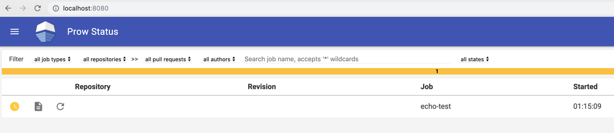
发送一个空的 POST 请求给 hook 访问地址的 /hook 目录（比如 http://prow.example.com/hook ）应该看到如下 400 的返回结果。
$ curl -i -d "" http://localhost:8088/hook
HTTP/1.1 400 Bad Request
Content-Type: text/plain; charset=utf-8
X-Content-Type-Options: nosniff
Date: Wed, 12 Jun 2019 04:37:12 GMT
Content-Length: 47
400 Bad Request: Missing X-GitHub-Event Header
给本地 k8s 集群接入公网 Webhook 访问
如果你是本地 k8s 集群，必须给 hook 服务接入可被 Github 访问的公网访问地址，如果是公网 k8s 集群可以跳过这一步。
先去 www.ultrahook.com 首页点击 Get Start Now! 注册完成即可免费获得 API Key，然后按提示安装 UltraHook 启动代理。
# 本地安装 UltraHook 客户端
sudo gem install ultrahook
# 将申请到的API Key 保存到 UltraHook 配置文件
echo "api_key: nYKv6q6X9lJUbDCGXIRQfJ6yNuip1234" > ~/.ultrahook
# 新开一个窗口启动 UltraHook 代理，因为期间不能结束 ultrahook 进程，转发 Webhook 请求到已经转发到 hook 服务的本地8088端口
ultrahook prow 8088
UltraHook 代理启动后会输出一个公网地址，复制这个地址用于在 Github 中添加 Webhook。
Authenticated as seanz
Forwarding activated...
http://prow.seanz.ultrahook.com -> http://localhost:8088
测试发送一个空的 POST 请求到 Webhook 地址，ultrahook 应该输出一个日志返回400，如果没有日志输出则说明没有代理成功，请检查 ultrahook。
注意：不管 hook 后端是否实际接受成功或者验证失败，ultrahook 请求的返回码都是200，所以我们只能通过 ultrahook 日志来查看 hook 后端的实际处理结果。
curl -i -d "" http://prow.seanz.ultrahook.com/hook
...
[2019-06-12 13:30:36] POST http://localhost:8088/hook - 400
给 Github 仓库添加 Webhook
以仓库 zhangsean/prow-test 为例，在项目 Settings → Webhooks 配置中点击 Add webhook 按钮，按如下提示填写相关信息并保存 webhook：
Payload URL: http://prow.seanz.ultrahook.com/hook # 上一步 UltraHook 生成的外网地址，加上 /hook 路径，这个路径是重点
Content type: application/json
Secret: `68f58d2dd9aa4ecd5fae8c0c0ac8cb8057e123456` # 通过 `cat hmac-token` 命令查看 hmac-token 的值
Which events would you like to trigger this webhook?: Send me everything.
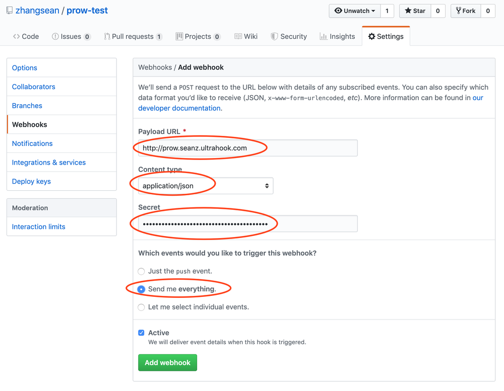
添加 webhook 成功后，新添加的 webhook 地址前会显示一个图标显示 webhook 接收端状态是否正常，确保状态为绿色的√。
如果状态为×说明 webhook 地址配置不正确，点击 webhook 地址进入 webhook 管理界面，下方Recent Deliveries会显示最近事件列表，点击事件UUID可以查看当前事件的推送请求和返回结果。在每个请求的 Reponse 标签中能查看Webhook请求返回的状态码和返回内容，有助于定位问题。
这里还可以通过点击 Redeliver 按钮重复推送这个事件，可以测试 webhook 接收端能否正常接收事件。
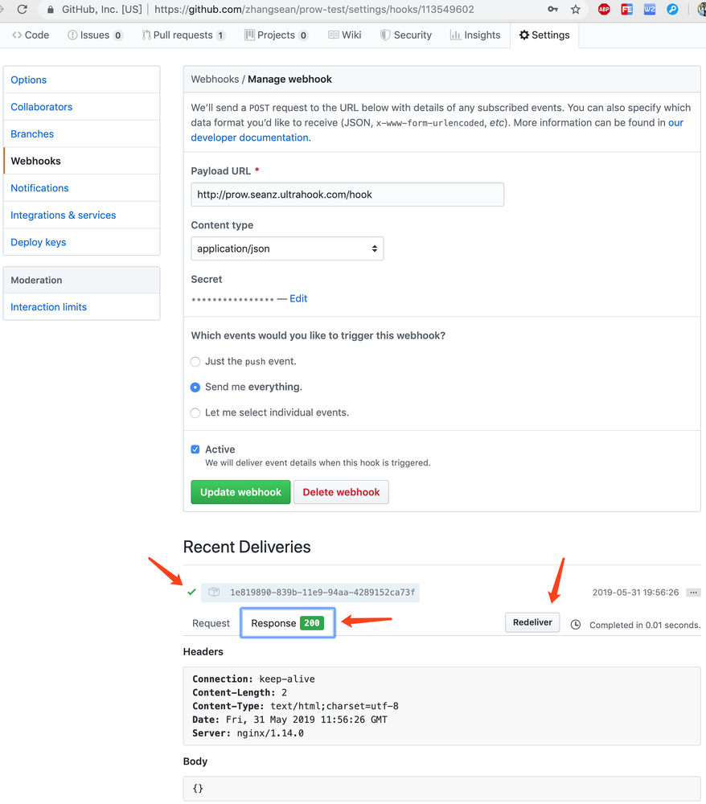
启用插件
Prow 自带了丰富的插件，可以通过 Prow Status 界面，左上角选择 Plugins 界面查看插件列表，点击某个插件的 DETAILS 按钮可以查看插件详情、适用场景、交互命令等。
插件仓库上方切换仓库列表即可过滤指定仓库启用了哪些插件，这里可以检查仓库的插件配置是否生效。
默认部署是没有启用任何插件的，需要通过修改k8s的 plugins.yaml 配置为指定的项目仓库启用所需插件。
创建一个名为 plugins.yaml 的文件并参照如下内容配置需要的插件。
我已经列出了几个便于测试的常用插件，注释后面是交互命令格式。
plugins:
zhangsean/prow-test: # 项目仓库名，只填写组织则可以应用到组织下的所有仓库
- size
- welcome
- owners-label
- wip
- cat # /meow
- dog # /woof
- pony # /pony
- yuks # /joke
- help # /help
- label # /key value, /kind bug, /language zh
- skip # /skip
- lgtm # /lgtm
- assign # /assign @user, /cc @user
- approve # /approve
官方建议通过 checkconfig 命令来验证配置文件是否正确。如果你没有大的改动，可以跳过。
# 安装 checkconfig
go get k8s.io/test-infra/prow/cmd/checkconfig
# 检查配置是否有语法错误
checkconfig --plugin-config=./plugins.yaml
保存 plugins 配置到 k8s：
kubectl create configmap plugins \
--from-file=plugins.yaml=./plugins.yaml --dry-run -o yaml \
| kubectl replace configmap plugins -f -
# 验证配置是否保存成功
kubectl get cm plugins -o yaml
插件配置保存成功后，要过一会儿才能在 Prow Plugin Catalog 界面看到配置生效。
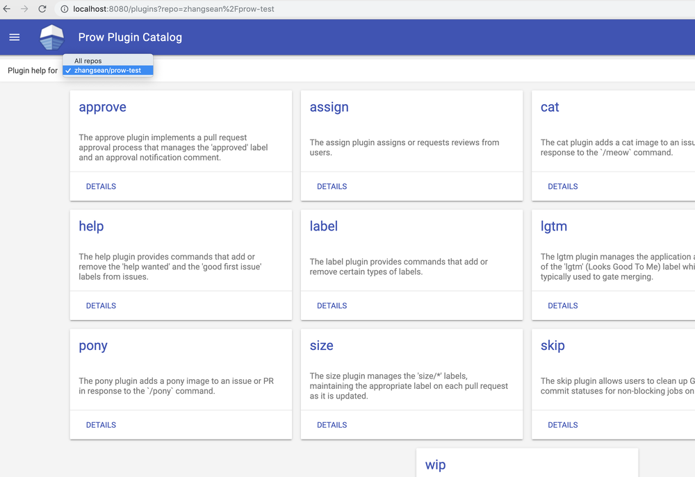
测试 Prow
插件配置生效以后就可以测试Prow效果了，在 Github 仓库中发起一个PR，稍后就会看到size，approve这几个插件的效果。
注意：如果没有创建机器人账号，直接在个人账号下添加的 Github Token，那么 Prow 的响应都会显示为个人账号的动作。
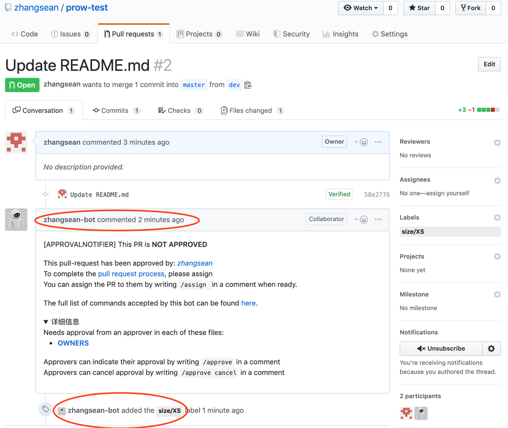
在 PR 中回复命令即可触发相关插件，比如回复 /pony 会自动插入一个马的图片。
管理员在满足合并要求的情况下回复 /lgtm 会触发 Prow 自动合并PR，其他命令交互效果请查看插件详情。
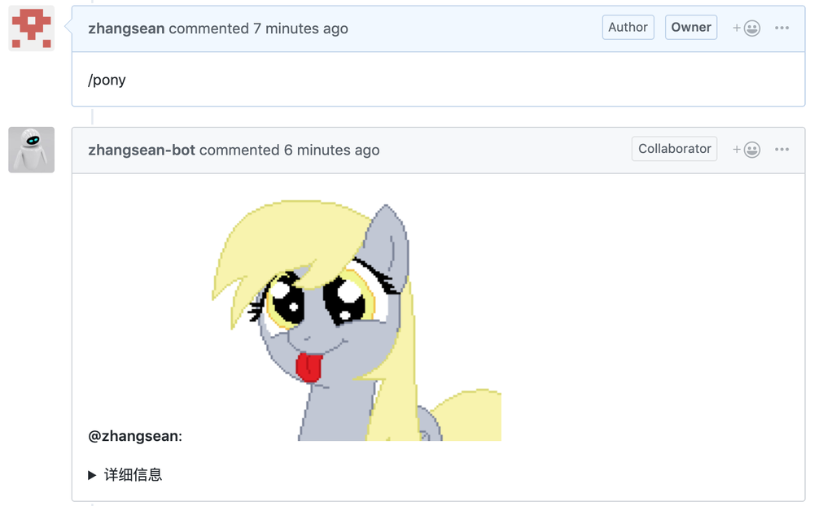
配置 Prow Job
配置 Prow Job 用于定时执行一些事务，比如定时执行 CI/CD 自动发布项目。
Prow 默认部署了一个 echo-test 测试任务，每隔10分钟显示当前时间。
通过查看k8s中 config 配置的 config.yaml 文件即可看到这个Job的配置内容:
kubectl get configmap config -o yaml
我们把 config.yaml 文件的内容提取出来，通过修改这个文件并应用到 k8s 集群来配置 Prow Job：
prowjob_namespace: default
pod_namespace: test-pods
periodics:
- interval: 10m
agent: kubernetes
name: echo-test
spec:
containers:
- image: alpine
command: ["/bin/date"]
如果暂时不需要 Prow Job，可以把 periodics 配置清空，比如：
prowjob_namespace: default
pod_namespace: test-pods
periodics:
官方建议通过 checkconfig 命令来验证配置文件是否正确，暂时可以跳过。
checkconfig --config-path=./config.yaml
保存 config 配置到 k8s 让 Prow Job 生效：
kubectl create configmap config \
--from-file=config.yaml=./config.yaml --dry-run -o yaml \
| kubectl replace configmap config -f -
Prow Job 应用后可以在 Prow Status 界面查看到执行记录：
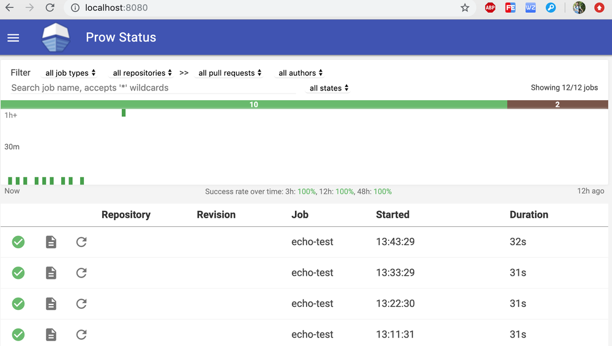
启用 Prow PR Status 功能
Prow PR Status 功能可以在 Prow 中查看个人相关的 PR 处于什么状态。Prow Starter集群默认没有启用 PR Status 功能，Prow 左侧看不到相关菜单，必须启用以后才会出现 PR Status 菜单。
由于 PR Status 是针对项目的所有贡献者的，所以当贡献者访问 Prow 的 PR Status 功能时，浏览器会跳转到 Github 使用 OAuth 认证获得用户的授权后，浏览器会自动跳转回 PR Status 界面显示该贡献者相关的 PR 列表。
注意：Prow 必须使用 https 访问才能正常使用 PR Status 功能。
在 Github 个人账号 Settings → Developer settings → OAuth Apps 中点击New OAuth App，参照如下信息添加一个 OAuth App.
Application name: Prow PR Status
Homepage URL: https://localhost:8080
Authorization callback URL: https://localhost:8080
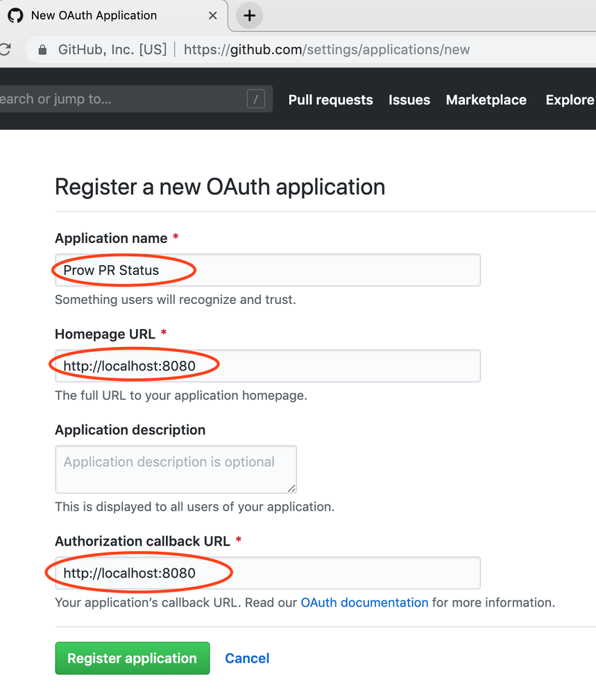
OAuth App 保存成功后，把生成的客户端ID和密钥填入 github-oauth-config.yaml 文件.
client_id: e6403c9b594929axxxxx
client_secret: 933edc0ed4f91db12ebc26165f40cd49b02xxxxx
redirect_url: https://localhost:8080/github-login/redirect
final_redirect_url: https://localhost:8080/pr
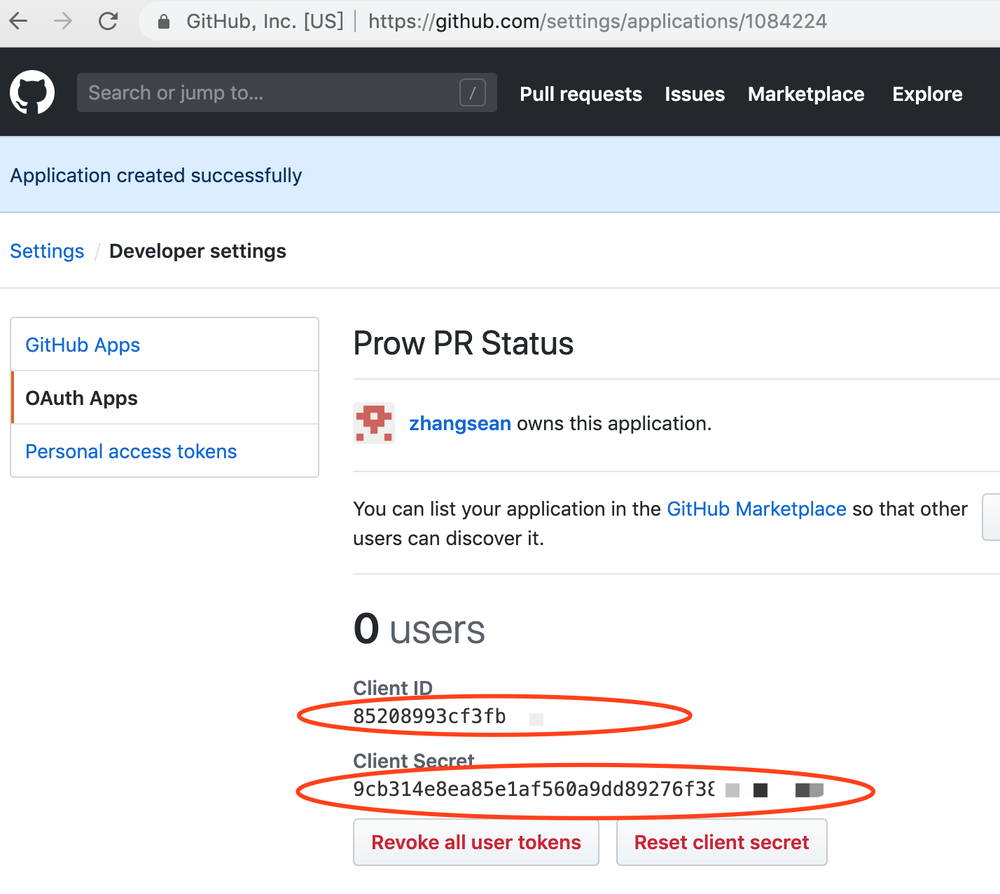
再创建一个用于保存 cookie 的 cookie.txt 文件。
openssl rand -out cookie.txt -base64 64
把以上2个配置文件保存到 k8s 集群。
kubectl create secret generic github-oauth-config --from-file=secret=github-oauth-config.yaml
kubectl create secret generic cookie --from-file=secret=cookie.txt
获取当前 deck 部署并添加配置以便启用 PR Status 功能。
kubectl get deploy deck -o yaml > deck_deployment.yaml
在 args 中添加1个参数，务必注意缩进:
- --oauth-url=/github-login
在 volumeMounts 下面添加2个挂载路径，务必注意缩进:
- name: oauth-config
mountPath: /etc/github
readOnly: true
- name: cookie-secret
mountPath: /etc/cookie
readOnly: true
在 volumes 下面添加2个卷引用，务必注意缩进:
- name: oauth-config
secret:
secretName: github-oauth-config
- name: cookie-secret
secret:
secretName: cookie
在 k8s 集群中更新 deck 部署：
kubectl apply -f deck_deployment.yaml
# 检查 deck 的 pod 状态，直到所有 pod 都是 Running
kubectl get po
等 deck 的所有 pod 都重建以后，刷新 Prow Status 界面，左侧菜单会多出一个 PR Status 菜单。
点击这个菜单会执行 OAuth 认证过程，跳转到 Github 中根据提示授权 Prow 读取 Github 的信息，授权成功后会回到 PR Status 界面显示当前用户开启的 PR 列表及其状态。